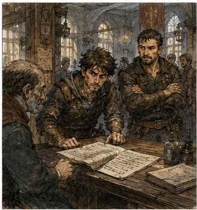
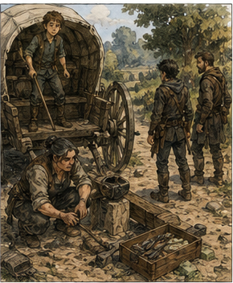
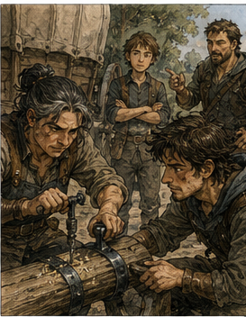

Jorren hit me in the ribs three more times before he decided I was learning.
I disagreed with his metric.
"Again," he said.
"I have ribs," I said.
"Good. Use them," Jorren said.
"That is not what ribs are for," I said.
Jorren raised the practice sword. I raised mine. This time I did not look at his shoulders.
That sounds stupid. It was not. I had spent decades learning to read the first honest movement in a body. Shoulders lied less than hands. Hips lied less than shoulders. Feet lied least of all, except when someone was very good, in which case everything lied and you started looking at breathing, rhythm, distance, intent, terrain, allies, exits, mana, fatigue, injury, and whether the bastard had a second knife.
Jorren had one wooden sword. No mana. No second knife.
Probably. I looked at his feet. He stepped.
My mind produced six answers. I chose one I could actually perform. Block. Simple. Ugly. Correct.
Wood cracked against wood. The impact traveled through my wrist, but my sword stayed where I had put it. Jorren's eyebrows moved. That was all the warning I got before he kicked my ankle. I fell.
"Fuck."
"Better," he said.
"Which part?" I asked.
"The part before you fell," Jorren said.
I rolled onto my back and stared at the sky. "Excellent. I am improving in increasingly narrow portions of combat." Jorren planted the end of his practice sword beside my head. "You stopped trying to win." I turned my head. He was serious.
"I am always trying to win."
"No. Usually you're trying to prove you already know how."
That was an unpleasantly crowded category of people who could apparently diagnose me now. I sat up. "Hessa has been talking to you."
"Who?"
"Never mind."
Jorren offered his hand. I took it and stood. The training yard was mostly empty. Two boys were wrestling badly near the fence. An older woman in a leather vest was teaching a girl how to fall without putting her wrist down. Somewhere behind the guild building, somebody was hammering metal in a rhythm that made me want to count it. Jorren handed both practice swords to the yard keeper.
"Come on," he said.
"Where?" I asked.
"Job," Jorren said.
I stopped. Jorren kept walking.
"Jorren."
He looked back.
"What job?" I asked.
"Easy one," Jorren said.
Every scar I had ever acquired developed an opinion.
"There are no easy jobs," I said.
"There are," Jorren said.
"No. There are jobs where the problem hasn't introduced itself yet," I said.
Jorren sighed. "You want to go back to adventuring?"
"Yes," I said.
"You've complained about it every time I've seen you."
"That is how I express commitment," I said.
"Then come," Jorren said.
I followed him through the guild hall. I had been in buildings like this for most of my first life. Different city, different hall, same architecture of organized desperation. Boards. Benches. Ink. Mud. People pretending not to listen to other people's negotiations. The better halls had clerks who understood that adventurers were essentially mobile disasters requiring paperwork. Carrow's hall was not one of the better halls.
It was fine. Bronze work covered most of the near board. Deliveries. Escorts. Pest clearing. Missing livestock. Guard shifts. Recovery work. A request to find a man's blue coat, which had somehow acquired a reward large enough to imply the coat contained either money, evidence, or a marriage. I looked at the higher boards.
Jorren stepped in front of me.
"No."
"I was looking," I said.
"Look lower," Jorren said.
"That is philosophically hostile," I said.
"Bronze," Jorren said.
"I know my rank," I said.
"Do you?" Jorren asked.
I smiled at him. He did not smile back. Fine.
Jorren led me to a clerk with ink on both thumbs. She was perhaps thirty, with close-cut hair and the expression of someone who had already heard every explanation for why a contract had gone wrong.
"Replacement," Jorren said.
The clerk looked at me. "Name?"
"Greg."
"Full."
"Gregory."
She waited.
"Gregory is full enough," I said.
Jorren rubbed his face. The clerk looked at him.
"Greg," he said.
"Greg what?"
I considered several surnames I had used in my first life. That was a bad sign.
"Just Greg," I said.
The clerk stared at me, then wrote something. I leaned over. She covered the page.
"Privacy," she said.
"You're writing about me," I said.
"Exactly," the clerk said.
I liked her.
"Contract?" I asked.
She pulled a sheet from beneath the counter. "Mara Venn. Mill road. Two miles north. Wagon escort and collection. One damaged axle reported. Cargo is iron fittings and lamp oil. Client wants two Bronze bodies because the road has had thefts."

"Bandits?" I asked.
"Thieves," the clerk said. "If they were organized enough to be bandits, the rate would be higher."
"How many thefts?" I asked.
"Three reported."
"Over what period?"
"Greg," Jorren said.
"What?"
The clerk answered anyway. "Nine days."
"Same location?" I asked.
"Within half a mile."
"Time?" I asked.
"Late afternoon twice. Unknown once."
"Violence?" I asked.
"One driver shoved. One knife shown. No injuries reported."
"Number of offenders?" I asked.
"Two to four."
"Description?" I asked.
"Young."
"That's not a description," I said.
"It is when nobody agrees on anything else."
I looked at the contract. Mara Venn. Mill road. Damaged axle. Iron fittings. Lamp oil. Collection.
"Why is the wagon still there?" I asked.
"Axle cracked yesterday," the clerk said. "Venn left one hand with it and came back to arrange repair."
"Cargo stayed?" I asked.
"Yes."
"Overnight?" I asked.
"Yes."
Jorren looked at me. I looked at the clerk.
"Still easy?" I asked.
She shrugged. "Probably." I hated probably.
"What does collection mean?" I asked.
"Bring wagon and cargo to Venn's yard. Repairman is already going."
"Who's the repairman?" I asked.
"Venn's."
"Who is with the wagon?" I asked.
"Her nephew."
"Age?" I asked.
The clerk paused.
"Sixteen."
I closed my eyes. Jorren said, "Don't."
"I'm not doing anything."
"Your face."
"Pay?" I asked.
"Eight copper each."
I stared. The clerk stared back.
"Eight," I said.
"Bronze work," Jorren said.
"I remember Bronze work paying badly," I said.
"Then why are you surprised?" Jorren asked.
"Memory improves things," I said.
The clerk slid the contract toward us. "Take it or don't." I wanted the job. That was the embarrassing part.
Eight copper was insulting. The threat was small. The cargo was boring. There was no dungeon, no magical salvage, no future-important artificer, no lender whose name survived forty years in my memory. A wagon had a broken axle. A sixteen-year-old was sitting beside it.
Someone needed to bring both home. I signed. The clerk looked at my signature.
"Gregory?" the clerk asked.
"Greg," I said.
"You signed Gregory," she said.
"Administrative identity is complicated," I said.
"Not here," she said.
Jorren signed beneath me. The clerk stamped the sheet.
"Return before dark if possible," she said. "If there is a serious threat, leave the wagon. Cargo is insured."
I paused.
"Insured by whom?"
Jorren grabbed my shoulder.
"We're leaving."
"I was curious," I said.
"That is the problem," Jorren said.
We left. Outside, Jorren handed me a short sword in a plain leather sheath. I weighed it.
"Guild issue?" I asked.
"Mine," Jorren said.
"You carry two?" I asked.
"Because people forget theirs," Jorren said.
"I didn't forget," I said.
"You came to spar," Jorren said.
"Correct," I said.
"Then I saved you a walk," Jorren said.
I buckled it on. The weight was familiar. Not this sword.
A sword. My body changed slightly when the belt settled. Shoulders.
Stride. Attention. Jorren noticed.
"What?"
"Nothing," he said.
"You looked."
"I have eyes."
"Everyone is stealing my lines."
We walked north. The city thinned into workshops, yards, then scattered houses. The road was dry enough that wagon ruts had hardened into ridges. Fields opened beyond low stone walls. A line of trees followed a creek to the east. I counted distances without meaning to. Wall to ditch. Ditch to tree line. House to bend.
Places someone could wait. Places someone could run. Jorren walked as if we were going to buy bread.
"You aren't looking," I said.
"I am," Jorren said.
"At what?" I asked.
"The road," Jorren said.
"Specifically?" I asked.
"Everything," Jorren said.
"That is not specific," I said.
Jorren glanced at me. "You think because I don't twitch my head at every bush, I'm not looking?" I considered that.
"Possibly," I said.
"You do too much," Jorren said.
"Frequently," I said.
"No. With your eyes," Jorren said.
That was new. I looked ahead.
"What do you mean?" I asked.
"You keep checking things you've already checked," Jorren said.
"Things change," I said.
"Not every three breaths," Jorren said.
Fair. I forced myself to stop scanning. Immediately hated it.
A cart approached from the north. Farmer. Empty crates. One wheel wobbling. Driver tired. No threat. I checked behind it. Jorren made a sound.
"What?" I asked.
"You did it again," Jorren said.
"The cart could conceal someone," I said.
"It didn't," Jorren said.
"Because I checked," I said.
Jorren shook his head. We walked another hundred paces. I tried something else.
Instead of searching for threats, I let the road exist.
Birds.
Wheel marks.
Old dung.
Fresh dung.
Broken branch.
Two sets of boot prints near the ditch. A place where grass had been flattened. I stopped.
Jorren took three more steps before looking back.
"What?"
I pointed. He looked.
"People sat there."
"Yes."
"Recently."
"Probably."
"Watching the road?"
"Maybe."
I crouched. No dramatic revelation appeared. No blood.
No secret symbol. No conveniently dropped bandit schedule. Two people had sat in grass.
One had eaten an apple. The core lay near the ditch. I picked it up.
Jorren said, "Useful?"
"No."
"Then put it down."
I put it down. Growth. We kept walking.
The wagon appeared around the next bend. One rear wheel had been removed. The axle rested on a block of stone. A narrow-shouldered boy sat on the wagon bed with a cudgel across his knees. He saw us and stood too fast.
"Guild?"
"Yes," Jorren called.
The boy relaxed. Then saw me. His expression became less relaxed.
I had that effect sometimes. A stocky woman was kneeling beside the axle with a tool roll open on the ground. Gray threaded her dark hair. She looked up once, assessed us, and returned to the cracked wood.
"You're late," she said.
"We took the contract ten minutes ago," Jorren replied.
"Then the guild's late."
"Probably."
I liked her too. The boy jumped down.
"I'm Tavin."
"Greg."
He looked at Jorren.
"Jorren."
The woman spoke without looking up. "Lara Holt."

"Repair?" I asked.
"No. Poetry."
I crouched beside her. She looked at me.
"Do you know axles?"
"Some."
"Enough to help?"
"Maybe."
"Then hold that."
She handed me a clamp. This was how useful people recruited you. No speech.
No assessment. Object. Task.
I held the clamp. The axle had split lengthwise near the wheel seat. Lara had fitted a shaped iron strap around it and was drilling pilot holes for bolts.

"Temporary?" I asked.
"To Venn's yard."
"Cargo weight?"
"Too much."
"Can we unload?"
"Into what?"
Fair. Jorren walked around the wagon. Tavin followed him.
I listened while Lara worked.
"Anyone come by last night?" Jorren asked.
"Three carts," Tavin said. "One shepherd. Two men."
"What men?"
"Walking."
"Stop?"
"No."
"Look at the wagon?"
"Everyone looks at a broken wagon."
Good answer.
"Recognize them?"
"No."
Lara tightened the strap.
"Hold."
"I am holding."
"Better."
I adjusted.
"Like that?"
"Yes."
She drilled. Wood curled out in pale ribbons. I smelled lamp oil from the wagon.
Not leaking. Just present. My mind offered fire.
I ignored it. Iron fittings and lamp oil. Why transport together?
Because people transported whatever needed transporting. Not everything was a clue. That was harder to remember than it should have been.
Lara fitted the first bolt.
"Other side."
I moved. She worked quickly. Competently.
No interest in me beyond whether my hands were useful. Pleasant.
"How long have you done this?" I asked.
"Since before you were born."
I nearly laughed.
"Probably."
She looked up. I shut my mouth. Not today.
When the strap was secured, Lara stood and rolled her shoulders.
"It'll hold if he doesn't drive like an idiot."
Tavin said, "I don't." Lara looked at him. Tavin corrected himself.
"I won't."
"Good."
We refitted the wheel. That required more lifting than I wanted. My mind knew exactly where to stand and how to use leverage. My back knew it was nineteen and therefore believed consequences were fictional. My arms knew the truth.
By the time the wheel seated, I was sweating. Jorren noticed. I hated him.
"You all right?" he asked.
"Excellent."
"That's not what I asked."
"Then yes."
Lara packed her tools. "I'll walk back."
"No cart?" I asked.
"Came with the milk wagon."
"That passed us."
"Then I suppose I'm walking."
She did not seem bothered. Independent problem solved. She had repaired the axle. She had another job somewhere else. We were not the center of her day.
I liked that. Tavin climbed onto the driver's bench. Jorren looked at me.
"Front or rear?"
"Rear."
"Why?"
"Cargo access."
"Fine."
He took front. I walked behind the wagon as it started. Slow.
Painfully slow. The repaired axle creaked. Lara walked beside me for the first quarter mile, then turned down a farm lane with a brief wave.
"Good luck," she said.
"With the thieves?" I asked.
"With him."
She pointed at Tavin. Tavin shouted something impolite. Lara kept walking.
The road curved. I watched the tree line. Once.
Then stopped. We reached the flattened grass. The apple core was still there.
Shocking. Tavin drove past. Nothing happened.
Another hundred paces. Nothing. I began to feel stupid.
This was healthy. My first life contained thousands of hours like this. Walking. Waiting. Escorting something nobody wanted. Guarding doors nobody attacked. Searching rooms containing exactly what rooms normally contained. Memory compressed those hours.
Danger survived. Boredom did not. That distortion mattered.
If I remembered adventuring primarily as the moments when something happened, then present me was going to expect the world to provide narrative density it had never promised. The wagon rolled. A bird screamed from a fence post.
I did not draw my sword. Growth. Then the rear wheel jerked.
The wagon lurched. Tavin shouted. I moved before thought.
Hand on sword. Step left. Eyes up.
Road. Ditch. Trees.
No attackers. Jorren was already at the horse.
"Stop!" he called.
Tavin pulled the reins. The wagon settled crooked. I looked at the repaired wheel.
Still attached. The opposite rear wheel had sunk into a soft patch at the road edge. Not an ambush.
Mud. I felt betrayed. Jorren looked at me.
"Threat?"
"Earth."
"Should I stab it?"
"Give me time."
Tavin climbed down.
"I can get it out."
"Wait," Jorren said.
The boy stopped. Jorren crouched beside the wheel. I looked at the road.
The soft patch was odd. Most of the surface was hard. This section had been disturbed.
Not wet. Loosened. I crouched.
Jorren touched it.
"Someone dug here."
"Yes."
Tavin's face changed. I looked toward the ditch. There.
A narrow trench, covered badly with dust and dry grass, running from the wheel rut toward the ditch. Not enough to trap a wagon permanently. Enough to slow it.
Enough to make a driver climb down. Jorren stood.
"Now you can look at bushes."
I already was. Nothing. No movement.
No figures. No attack. That was worse.
"They're not here," Tavin said.
"Maybe," I replied.
Jorren gave me a look. I corrected myself.
"We don't see anyone."
Better. I walked ten paces back. The road behind us curved out of sight.
Ahead, another bend. Fields west. Trees east.
If I wanted to rob a wagon, I would not attack while two armed escorts were visible. If I wanted to rob a wagon and saw two armed escorts, I might wait. If I had prepared the soft patch, I knew the route.
Maybe I had another one. I stopped. That was branching.
What was the problem? Get wagon home. Not catch thieves.
Not solve nine days of road crime. Not become Sheriff Greg. Wagon.
Home. I turned back.
"Get the wheel out. Keep moving."
Tavin blinked. "That's it?"
"Yes."
"Shouldn't we find who did it?"
"No."
Jorren looked at me.
"What?"
"Nothing."
"Stop doing that."
He smiled. We unloaded two crates of iron fittings. Heavy.
Not impossibly heavy. I hated honest labor. We laid a board beneath the wheel, pushed, cursed, pushed again, and got the wagon back onto hard road.
I wanted to inspect the ditch. I did not. I wanted to follow the trench.
I did not. I wanted to mark the location, circle through the trees, identify observation points, estimate offender numbers, compare boot prints to the flattened grass, question nearby farms, and build a pattern of attacks. I did one of those things.
I marked the location in my head.
Useful.
Bounded.
Then we reloaded the crates. Tavin climbed up. Jorren said, "I'll take rear."
"Why?"
"Because you're thinking."
"I can think and walk."
"That's what worries me."
I took front. The next half mile was uneventful. Then I saw a man beside the road.
Young. Maybe twenty. Brown shirt.
No visible weapon. He was kneeling beside a basket with turnips spilled around it. I hated him immediately.
Not personally. Structurally. Tavin slowed.
"Don't," I said.
The boy looked at me. "He's dropped his stuff."
"I see."
The man looked up.
"Wheel broke?" he called.
"No," I replied.
Jorren had moved closer behind the wagon. The man picked up a turnip.
"Need a hand?"
"No."
Tavin whispered, "He's just helping."
"He hasn't helped."
The man stood. Hands visible. No weapon.
Alone. Maybe. I looked at the ditch.
Then the trees. Then stopped myself. What did I know?
A young man. Basket. Turnips.
Near road. Three thefts. Prepared soft patch behind us. Nothing else.
"Keep moving," I said.
Tavin frowned but flicked the reins. The wagon rolled. The man watched us pass.
I watched him. He smiled. Not friendly.
Not unfriendly. Just a smile. We went around the bend.
Jorren caught up.
"You think him?"
"I think he exists."
"Useful."
"I have insufficient information."
"Better."
We continued. A minute later, footsteps ran behind us. I turned.
The turnip man came around the bend. Alone. Running.
"Hey!"
My hand went to the sword. Jorren's did not. That irritated me.
The man slowed twenty paces away.
"You dropped this."
He held up a small iron bracket. Tavin looked back.
"Shit."
One of the cargo pieces. Probably bounced loose when we unloaded. The man approached carefully and held it out.
I took it.
"Thank you."
He looked at my hand on the sword.
"You're welcome."
Then he jogged back toward his turnips. I stood there. Jorren said nothing.
I waited. Nothing.
"Say it," I said.
"Say what?" Jorren asked.
"Whatever your face is saying," I said.
Jorren smiled. "My face did nothing." I hated everyone. We reached Mara Venn's yard before dark.
The yard sat behind a low warehouse with racks of iron stock under an awning. Three workers came out when Tavin shouted. A woman with a red scarf and forearms like a blacksmith's walked straight past us to the repaired axle. Mara Venn, presumably. She crouched.
Touched the strap. Looked at Tavin.
"You drove slow?"
"Yes."
"Mostly," Jorren said.
Tavin glared at him. Mara stood.
"Cargo?"
"All there," Tavin said.
I held up the bracket.
"Almost."
Tavin's face fell. Mara took it.
"Where?"
"Road."
"Lost?"
"Recovered."
"By?"
I considered saying a suspicious turnip merchant.
"Man on the road found it."
Mara nodded once.
"Good."
She did not care about my emotional journey. Reasonable. We helped unload. Again. Eight copper.
I had forgotten how much Bronze adventuring involved carrying things. When the last crate hit the warehouse floor, Mara handed Jorren a signed contract slip.
"Trouble?" Mara asked.
Jorren looked at me. I answered.
"Someone loosened part of the road to catch a wheel."
Mara's attention sharpened.
"Where?"
I described the bend.
"Anyone there?" Mara asked.
"No."
"See anyone suspicious?" Mara asked.
I thought of turnips.
"No one I could identify as involved," I said. Good. True. Boring.
Mara looked at Tavin. "You stay off that road alone."
"I was fine."
"You stayed beside a wagon full of oil overnight with a stick."
"It was a good stick."
Mara stared. Tavin looked down.
"Fine."
"Guild know?" Mara asked.
"Not yet," Jorren said.
"Tell them," Mara said.
"We will," Jorren said.
Mara handed Tavin the iron bracket.
"You check every crate before the next run."
He nodded. That was his problem now. Not mine.
We walked back toward the guild. The sun had dropped low enough to stretch our shadows across the road. I felt good.
Annoyingly good. No monster. No dungeon.
No brilliant solution. No future knowledge converted into money. We had brought a wagon home.
Jorren said, "You almost did well."
"There it is."
"What?"
"The insult."
"You kept moving."
"Yes."
"You didn't chase."
"No."
"You didn't interrogate the turnip man."
"I considered it."
"I know."
"How?"
"Your face."
"Fuck off."
Jorren laughed. We reached the disturbed patch again. I stopped.
He stopped beside me.
"Now?" I asked.
"Now what?" Jorren asked.
"Contract is complete," I said.
"Not until we file," Jorren said.
"Nearly complete," I said.
"No," Jorren said.
I looked at the ditch.
"Five minutes," I said.
"No," Jorren said.
"Three," I said.
"No," Jorren said.
"One," I said.
Jorren sighed.
"One," Jorren said.
I smiled. We inspected the road. Not the forest.
Not the entire crime. The road. The loosened patch had tool marks beneath the dust. Narrow blade. Shovel or spade. The little trench toward the ditch did not drain anywhere useful. It was camouflage for displaced soil.
Jorren crouched beside a print.
"Boot," Jorren said.
"Excellent," I said.
"Shut up," Jorren said.
The print was partial. Small. Worn heel.
Another near it. Larger. At least two people had worked the patch.
Maybe. Could have been one person wearing two boots of different sizes, which would be impressive for several reasons. I looked toward the flattened grass farther back.
"Same?"
"Can't tell," Jorren said.
"Neither can I," I said.
That felt worth saying. We stood. One minute.
Done. At the guild, the ink-thumbed clerk read Mara's signed slip.
"Trouble?"
Jorren pointed at me. I gave the report. Location. Disturbed road. Probable deliberate wheel trap. No attack.
No confirmed suspects. At least one partial boot print, possibly two people involved. The clerk wrote.
"Turnip man?" she asked.
I stared. Jorren laughed so hard he had to lean on the counter.
"How do you know about the turnip man?" I asked.
"Three other reports mention him."
I went still. Jorren stopped laughing. The clerk continued writing.
"Young. Brown shirt. Sells turnips from a basket."
"He wasn't selling," I said.
"Today," the clerk said.
"He returned dropped cargo," I said.
"Good," the clerk said.
"Is he involved?" I asked.
"We don't know," the clerk said.
I leaned closer. The clerk looked up. I stopped leaning.
"What do the other reports say?"
"One driver saw him before the theft. One after. One buys turnips from him every week and thinks everyone is an idiot."
"Name?" I asked.
"Len," the clerk said.
"Full?" I asked.
She covered the page.
"Privacy," the clerk said.
I smiled.
"Right," I said.
The clerk took two stacks of copper from a drawer. Eight each. She pushed mine toward me.
I looked at it. Eight copper. Actual adventuring income. Pathetic. Beautiful.
"Anything else?" I asked.
"Yes," the clerk said.
She put another contract sheet on the counter. I looked at it. Mill road.
Observation patrol. Two Bronze. Tomorrow afternoon.
Jorren groaned. I read the rate.
"Twelve copper," I said.
"Don't," he said.
"I haven't said anything," I said.
"Your face," Jorren said.
The clerk tapped the sheet.
"Interested?" the clerk asked.
Yes. Immediately. Not because of twelve copper. Because there was now a pattern. A bounded problem. A road.
A likely pair or small group creating controlled stoppages. A known recurring civilian who might be irrelevant, involved, or simply unlucky enough to sell vegetables where people got robbed. I wanted it.
Too much. That was information too. I looked at Jorren.
He was watching me. Not refusing. Waiting.
I could already feel old Greg building the patrol. Approach routes. Counterambush. Decoy wagon. Hidden positions. Signals. Capture. Interrogation. Maybe magic.
No. Not magic. Hessa would kill me. Then revive me specifically to stop teaching me.
I looked at the contract again.
"What is the job?" I asked.
"Observation patrol," the clerk said.
"Observation patrol."
"Not capture?" I asked.
"Not unless necessary," the clerk said.
"Not bait?" I asked.
"No," the clerk said.
"Not investigation beyond the road?" I asked.
"No," the clerk said.
"Report what we see?" I asked.
"Yes," the clerk said.
I nodded.
"Then yes," I said.
Jorren looked surprised.
"What?" I asked.
"Nothing," Jorren said.
"Your face," I said.
He signed. I signed beneath him. Gregory again.
The clerk noticed. She said nothing. Outside, I counted my eight copper into my palm.
Jorren stretched his shoulders.
"You happy?" Jorren asked.
"No," I said.
"You look happy," Jorren said.
"I earned eight copper," I said.
"You have terrible standards," Jorren said.
"I once made more money in an hour than this guild probably moves in a month."
Jorren looked at me. I looked back. That had escaped.
"Doing what?" Jorren asked.
"Gambling," I said.
That was technically possible. He accepted it. Good.
I put the coins away. Eight copper.
Tomorrow, twelve more if the road remained boring. Maybe thieves. Maybe no thieves.
Maybe turnips. I had wanted a dungeon. Instead I had a road.
That should have felt like failure. It did not. The road had given me something the dungeon could not yet give me safely. A measure.
Not of old Greg. Not of what I remembered. Of the man who had walked out of Carrow this afternoon with a borrowed sword and too many answers.
He had seen a trap and not chased the people who made it. He had mistaken a helpful man for a threat and corrected without inventing evidence to save his pride. He had completed the job he was actually paid to do.
This was an embarrassingly low bar. I had failed lower ones. Jorren started toward the taverns.
"Drink?" Jorren asked.
"I have training tomorrow," I said.
"After," Jorren said.
"Patrol," I said.
"After that," Jorren said.
I considered.
"One," I said.
"One what?" Jorren asked.
"Drink," I said.
Jorren smiled.
"Sure," Jorren said.
"That smile means more than one," I said.
"It means nothing," Jorren said.
"Your face," I said.
He shoved me. I nearly stepped into the street. A cart driver swore at me.
I swore back. Then followed Jorren toward the tavern. Tomorrow, we were going to watch a road.
I was already thinking too much about it. Progress had limits.